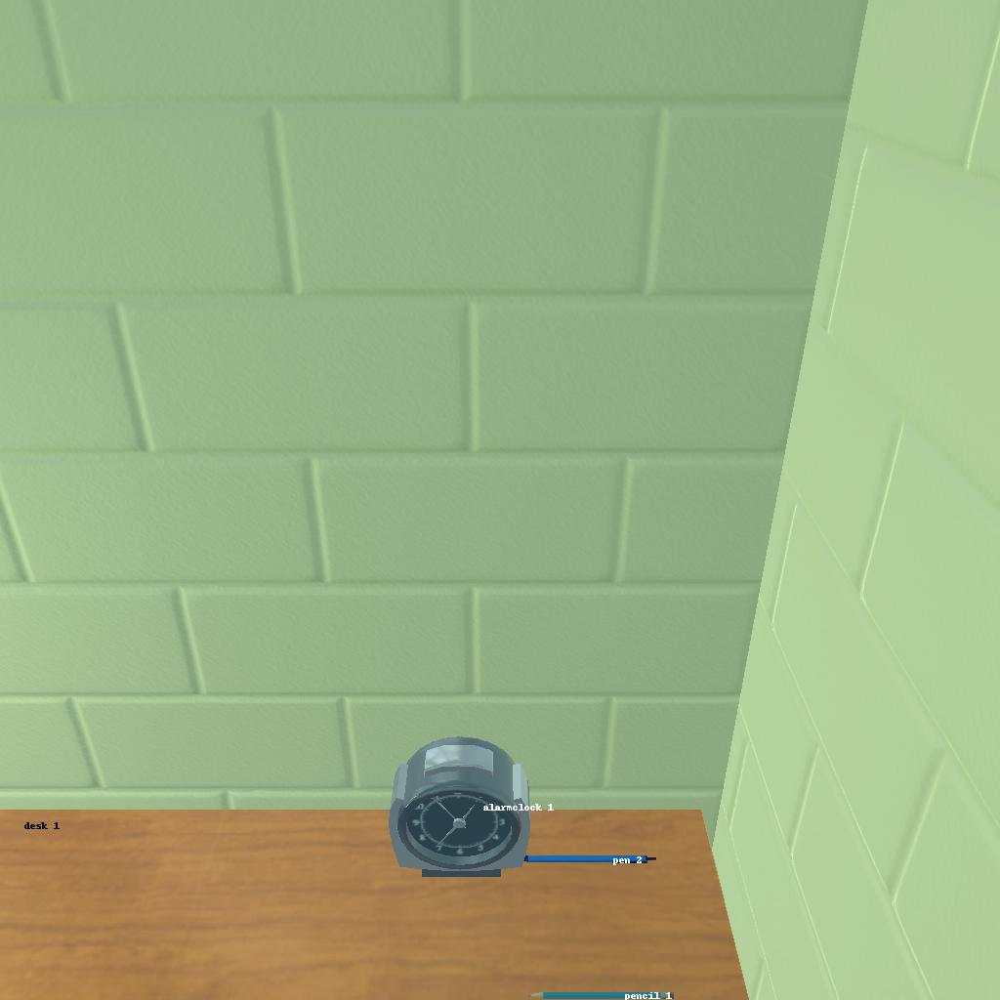

---------------------------------------------------------task: 8---------------------------------------------------------
--------------------------------------------------------------------------------------------------------------------------------------------------------------------
--------------------------------------------------------------------------------------------------------------------------------------------------------------------
Step:--------------------------------------------------------------------------12-------------------------------------------------------------------------------
----------------------------------------
VLM Prompt:
Image1:
Image2:
Image3:
**Instruction**
1. Analyze the provided image to identify all visible household objects, focusing on those relevant to the task description "put some laptop on desk."
2. Use the analysis of the image and the task hint "The agent must find an object of the desired type, pick it up, find the correct location to place it, and put it down there." to answer the question: what is the most reasonable action in the choices for the task description "put some laptop on desk"?
4. Decide and write the answer using the template: The answer is: (i): , where i is the real number. If there is no desired object in the image, search every place based on **Initial Observation** to find the object. And if no one is exactly correct, choose a similar answer.
**Initial Observation**
You are in the middle of a room. Looking quickly around you, you can see bed (1), garbagecan (1), desk (1), sidetable (1), drawer (1-5), laundryhamper (1)
**Answer Choices**
(1): go to bed 1
(2): go to garbagecan 1
(3): go to sidetable 1
(4): go to drawer 1
(5): go to drawer 2
(6): go to laundryhamper 1
(7): go to drawer 4
(8): go to drawer 5
(9): take alarmclock 1 from desk 1
(10): take pencil 1 from desk 1
(11): take pen 2 from desk 1
(12): examine desk 1
**Answer**
Let's think step by step by following the instructions.
----------------------------------------
----------------------------------------
Original Response:
Firstly, we need to identify all visible household objects relevant to the task description "put some laptop on desk." From the images provided, we can see various items on the desk and around it, but there is no laptop visible in any of the images.
Given the task hint, the agent must find an object of the desired type, which in this case is a laptop. Since the laptop is not visible on the desk or in the immediate surroundings, the agent needs to search for it.
From the initial observation, we know there are several places to search, including the bed, garbage can, side table, drawers, and laundry hamper.
The most reasonable action from the answer choices, considering the task description and the hint provided, would be to search places where a laptop might be kept or stored, such as drawers. Therefore, the agent should go to each drawer and examine it to find the laptop.
The answer is: (4): go to drawer 1. If the laptop is not found in drawer 1, the agent should proceed to the next drawer and continue the search until the laptop is found.
----------------------------------------
----------------------------------------
>>> Refine Original VLM Response and Get Pure Action: go to drawer 1
----------------------------------------
-----------------------------------------------------------------
Running time: 13.15001130104065 seconds
Total Money: 4.722759999999999
-----------------------------------------------------------------
-----------------------------------------------------------------
Text Observation:You arrive at loc 4. The drawer 1 is closed.
-----------------------------------------------------------------
UNSUCCEED